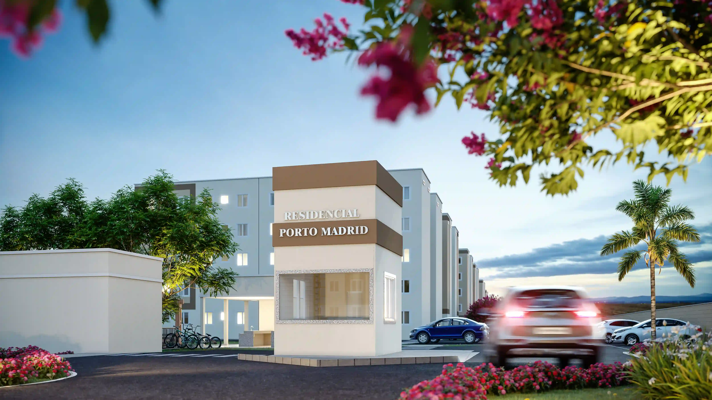
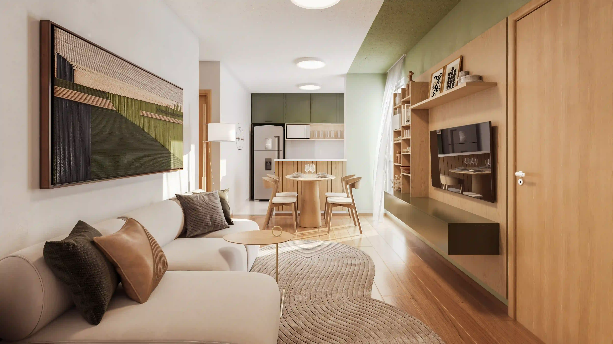
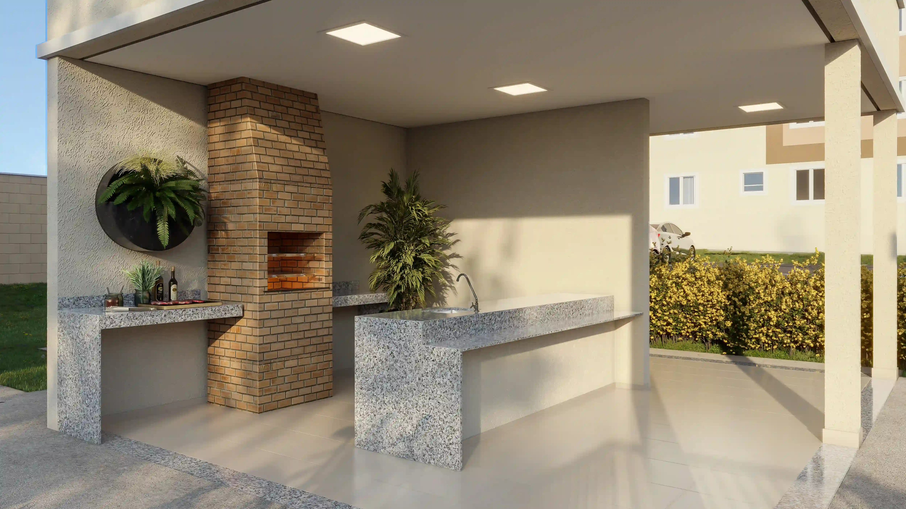
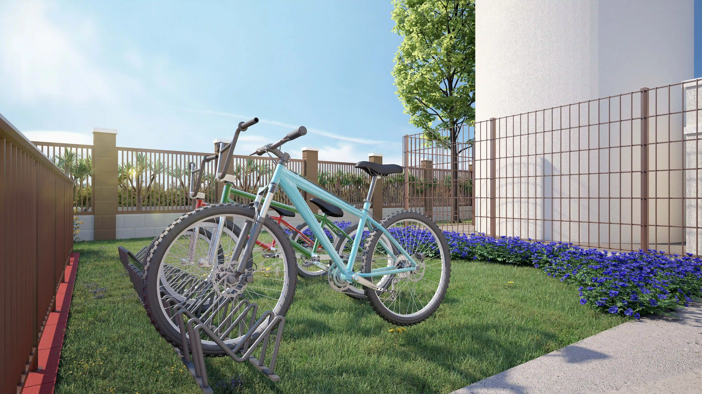

Subsídio
Adquira seu primeiro imóvel com Subsídio do Minha Casa Minha Vida.




PORTO MADRID · MRV · PARQUE DOS ANJOS · GRAVATAÍ
Apartamentos prontos em condomínio fechado, na região do Parque dos Anjos, a cerca de 5 minutos do Centro. Descubra se você se enquadra no Minha Casa Minha Vida.
Pronto para morarPARA QUEM QUER SAIR DO ALUGUEL AGORA
O Porto Madrid - Se não fosse acessível não seria MRV. Você conhece o apartamento de verdade, organiza a documentação e planeja a mudança com data próxima.
Adquira seu primeiro imóvel com Subsídio do Minha Casa Minha Vida.
Todos os apartamentos têm vaga, sem disputa e sem custo extra de estacionamento.
Guarita, área de lazer e a tranquilidade de morar em um espaço controlado.
Comércio completo no bairro, a cerca de 5 minutos do Centro de Gravataí.
CONDIÇÕES DE AQUISIÇÃO
*Faixas de renda do Minha Casa Minha Vida conforme regras vigentes divulgadas pela MRV, a renda mínima informada pela MRV é de R$ 2.300. **O subsídio funciona como desconto no valor do imóvel; a concessão e o valor dependem da renda, da composição familiar e dos programas disponíveis na região. ***Regra geral: a parcela não ultrapassa 30% da renda bruta familiar mensal. Valores, unidades disponíveis e condições são informados no atendimento e dependem de análise e aprovação de crédito. O cadastro inicia o atendimento e não garante benefício ou reserva, entre em contato e solicite análise.
LOCALIZAÇÃO · PARQUE DOS ANJOS · GRAVATAÍ
Região do Parque dos Anjos — Gravataí/RS
Ficha técnica do Porto Madrid.
Residencial Porto Madrid · MRV · Região do Parque dos Anjos · Gravataí/RS.
DÚVIDAS FREQUENTES
Na região do Parque dos Anjos, em Gravataí/RS, a cerca de 5 minutos do Centro da cidade. Informamos o endereço completo no atendimento.
O Porto Madrid está em produção, entrega 03/2028.
Todos têm 2 quartos.
Sim. Todas as unidades do Porto Madrid têm vaga.
Sim, conforme o enquadramento da sua família. O programa atende rendas familiares de até R$ 13 mil, divididas por faixas, e o enquadramento é confirmado na análise de crédito.
O subsídio funciona como um desconto no valor do imóvel, reduzindo o total financiado. O valor depende da renda, da composição familiar e dos programas disponíveis na região.
Depende da sua renda e da unidade escolhida. Em geral, os bancos não permitem parcelas acima de 30% da renda bruta familiar. Simulamos com os seus dados, sem compromisso.
Pelo financiamento SBPE, a renda mínima informada pela MRV é de R$ 5.000. Avaliamos a melhor modalidade para o seu perfil.
O uso do FGTS segue as regras do programa e da Caixa. Orientamos sobre a documentação necessária.
Os valores variam conforme a unidade e as condições do dia. Preencha o formulário e receba a tabela atualizada.
SEU PRÓXIMO PASSO
Você viu o apartamento, a localização e como funciona a compra. Agora registre seu interesse e receba valores, unidades disponíveis e orientação sobre subsídio e financiamento pelo Minha Casa Minha Vida. Atendimento informativo, sem compromisso de compra.